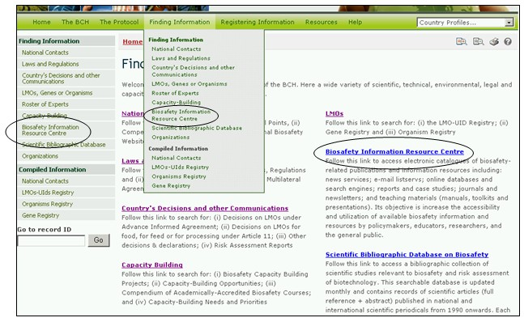
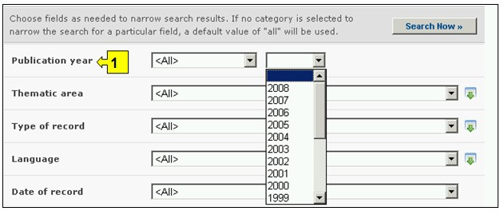
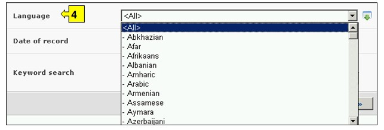

URL: http://bch.cbd.int/database/resources/
议定书第20条成立了生物安全信息交换所，以利于在缔约方之间交流有关改性活生物体的信息和经验，从而协助缔约方执行议定书。为实现这一作用，生物安全信息交换所包含各缔约方、各政府和组织提交的与生物安全和执行议定书有关的信息。
生物安全信息资源中心包含有关生物安全的出版物电子目录和给决策者、教育者、研究者和大众的信息资源。所有生物安全信息交换所账户持有者均可在生物安全信息资源中心登记纪录条。
通过导航工具条上的查询信息下拉菜单上的链接、或通过查询信息页面左侧菜单中的链接或同一页面上关于生物安全信息资源中心文字中的链接可进入搜索生物安全信息资源中心的界面。

图 82
这些链接使用户可以获得有关生物安全出版物的电子目录和下列信息：
1. 地理资源；
2. 进行风险评估和风险管理的指导材料；
3. 新闻服务（包括群发电邮）；
4. 一次性出版物（专著）
5. 报告；
6. 系列/期刊
7. 教学材料（包括手册、工具箱和演讲材料）
8. 网址、在线索引或搜索工具
在搜索生物安全信息资源中心页面上有六个搜索标准框，可用于对该数据库中的搜索进行进一步限定。每一个搜索标准框均有一个下拉式菜单，用于选择所需的标准。每一个下拉菜单的缺省设置是菜单列表顶端的第一个选项。在每一个方框的右侧有一个按钮，使用户可以启动多重选择。一旦进入多重选择模式，可在按住Ctrl（控制）键的同时点击有关标准从而在选择中添加更多标准。

图 83
方框1[发表年份]列出了文章发表日期的选项。用户可选择发表的确切年份，只搜索该年份方框。也可以在年份框中选择早于或晚于所显示年份进行筛选。

图 84
方框2[专题领域]列出了现有出版物的主要专题领域，使用户可以将搜索范围缩小到这里列出的一个或多个领域。

图 85
方框3[纪录条类型]列出了生物安全信息资源中心储存的纪录条类型。用户可将搜索限定在一个特定的信息来源。

图 86
方框4[语言]使用户可将搜索限定在使用某一种或多种语言的文件中。

图 87
方框5[记录日期]允许用户根据数据纪录条在生物安全信息交换所登记的日期限定搜索范围。下拉菜单提供了若干个选项，可将搜索限定在某一选定时间间隔（如前一天、上个月、去年等）内提交的纪录条。

图 88
方框6[关键词搜索]提供了使用关键词缩小搜索范围的可能。用户可使用标准关键词句法（结合使用“和/或”）搜索多个词或词的核心部分（如“进口或出口”）。使用关键词进行的搜索结果只显示含有与被搜索文字完全一样的纪录条而不会包含未输入的同义词（例如，只用一个关键词“Maize”(玉米)进行搜索的结果包括含有“Maize”的纪录条而不包括含有“Corn”或”Zea mays”（玉米同义词）的纪录条。

图 89
搜索页提供了三个按键用于生成搜索结果。 键（搜索界面的顶端和底部均有）使用户根据在搜索功能方框中选择的搜索标准启动搜索。搜索结果缺省设置为根据国家名字母顺序排列。 (位于搜索界面的底部)使用户可获得本数据库中所有记录条的列表。

图 90
搜索结果 页位于纪录条上方，具有对搜索结果进行排列的功能。这可用于根据具体信息类型特有的标准对纪录条进行排列。注意当用户选择不同的搜索标准时，排列标准也随之变化。

图 91
示例：用户希望查找最近发表的有关赔偿责任问题的文章。用户（一）在发表年份方框中选择晚于并包括2006 （二）在专题领域方框中选择赔偿责任和补救问题。点击 现在搜索 键可调出搜索结果。搜索结果根据文章标题字母顺序排列。

图 92

图 93